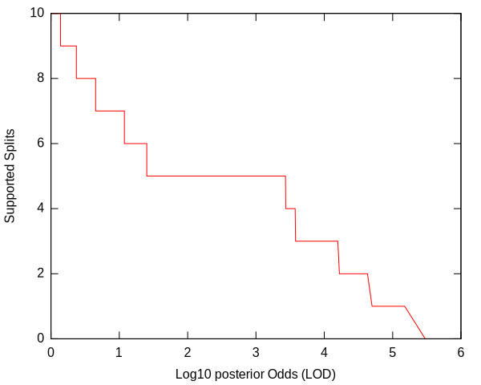
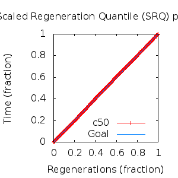
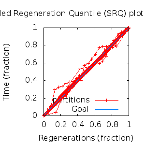

MCMC Post-hoc Analysis: 16 sequences
Data & Model
| Partition | Sequences | Lengths | Alphabet | Substitution Model | Indel Model | Scale Model |
|---|
| 1 |
E5_alpha1_alpha2_gammadelta_delta_aa_reduced.fas |
43 - 165 |
Amino-Acids | S1 = lg08+f |
I1 = rs07 |
scale1 ~ gamma[0.5,2] |
Scalar variables
| Statistic | Median | 95% BCI | ACT | ESS | burnin | PSRF-CI80% | PSRF-RCF |
|---|
| prior |
-181.1 |
(-222.5, -143.3) |
18.65 |
14474 |
328
|
1 | 1.003
|
| prior_A1 |
-210.5 |
(-248.5, -176.1) |
7.674 |
35182 |
140
|
0.9998 | 1
|
| likelihood |
-2306 |
(-2330, -2282) |
12.09 |
22325 |
223
|
1 | 0.9985
|
| posterior |
-2487 |
(-2520, -2459) |
23.61 |
11435 |
306
|
1 | 1.005
|
| Heat.beta |
1 |
| | | | | |
| Scale[1] |
6.182 |
(3.699, 9.388) |
1.094 |
246752 |
110
|
1 | 0.9985
|
| f:pi[A] |
0.05666 |
(0.03962, 0.07528) |
8.04 |
33583 |
309
|
0.9999 | 0.9909
|
| f:pi[R] |
0.0213 |
(0.009314, 0.03557) |
7.788 |
34668 |
401
|
1 | 1
|
| f:pi[N] |
0.02635 |
(0.01395, 0.04078) |
8.043 |
33571 |
356
|
1 | 1.003
|
| f:pi[D] |
0.04943 |
(0.0278, 0.07418) |
8.219 |
32850 |
226
|
1.001 | 0.9987
|
| f:pi[C] |
0.04918 |
(0.03272, 0.06744) |
8.002 |
33742 |
525
|
0.9999 | 0.9954
|
| f:pi[Q] |
0.0349 |
(0.01976, 0.05246) |
11.52 |
23427 |
373
|
1.001 | 0.9971
|
| f:pi[E] |
0.01921 |
(0.007655, 0.03386) |
7.871 |
34305 |
367
|
1 | 1.003
|
| f:pi[G] |
0.0342 |
(0.01739, 0.05369) |
7.813 |
34556 |
616
|
1 | 1.005
|
| f:pi[H] |
0.034 |
(0.02047, 0.04991) |
7.615 |
35454 |
521
|
0.9997 | 0.9949
|
| f:pi[I] |
0.07452 |
(0.05802, 0.09194) |
8.726 |
30942 |
392
|
0.9999 | 0.9957
|
| f:pi[L] |
0.1633 |
(0.1354, 0.1928) |
7.273 |
37124 |
305
|
0.9999 | 0.9986
|
| f:pi[K] |
0.02905 |
(0.0145, 0.0469) |
8.173 |
33037 |
390
|
1 | 1.007
|
| f:pi[M] |
0.02032 |
(0.01211, 0.02952) |
7.892 |
34212 |
241
|
1 | 0.9956
|
| f:pi[F] |
0.06181 |
(0.04525, 0.08064) |
7.924 |
34072 |
710
|
0.9997 | 0.9945
|
| f:pi[P] |
0.02582 |
(0.01164, 0.04373) |
8.412 |
32096 |
355
|
0.9997 | 1
|
| f:pi[S] |
0.05415 |
(0.03699, 0.07295) |
8.295 |
32549 |
418
|
0.9995 | 0.997
|
| f:pi[T] |
0.08129 |
(0.06109, 0.1036) |
7.733 |
34917 |
472
|
1 | 0.9988
|
| f:pi[W] |
0.01704 |
(0.007312, 0.02927) |
8.171 |
33044 |
449
|
1 | 0.9945
|
| f:pi[Y] |
0.03905 |
(0.02567, 0.05422) |
8.067 |
33470 |
430
|
1 | 1
|
| f:pi[V] |
0.09718 |
(0.07682, 0.1191) |
8.303 |
32516 |
225
|
0.9998 | 1.003
|
| rs07:mean_length |
11.25 |
(6.996, 16.95) |
2.783 |
97004 |
127
|
0.9998 | 1
|
| rs07:log_rate |
-3.878 |
(-4.346, -3.403) |
3.08 |
87668 |
218
|
0.9998 | 1
|
| |A1| |
204 |
(189, 221) |
2.772 |
97393 |
132 |
0.95 | 0.9995
|
| #indels1 |
24 |
(19, 29) |
7.508 |
35959 |
99 |
0.8571 | 0.9999
|
| |indels1| |
239 |
(202, 282) |
2.055 |
131411 |
127 |
0.9871 | 1.002
|
| #substs1 |
397 |
(381, 410) |
8.321 |
32447 |
167 |
0.9444 | 0.999
|
| Scale1*|T| |
7.184 |
(6.204, 8.227) |
3.412 |
79122 |
110
|
1 | 0.9948
|
| |A| |
204 |
(189, 221) |
2.772 |
97393 |
132 |
0.95 | 0.9995
|
| #indels |
24 |
(19, 29) |
7.508 |
35959 |
99 |
0.8571 | 0.9999
|
| |indels| |
239 |
(202, 282) |
2.055 |
131411 |
127 |
0.9871 | 1.002
|
| #substs |
397 |
(381, 410) |
8.321 |
32447 |
167 |
0.9444 | 0.999
|
| |T| |
1.164 |
(0.708, 1.719) |
1.011 |
267084 |
60
|
1 | 0.9987
|
Phylogeny Distribution


Alignment Distribution
Partition 1
|
|
|
Diff |
|
Min. %identity |
# Sites |
Constant |
Informative |
| Initial |
FASTA |
HTML |
Diff |
|
1.39% |
165 |
1 (0.606%) |
162 (98.2%) |
| Best (WPD) |
FASTA |
HTML |
|
AU |
0.787% |
201 |
1 (0.498%) |
175 (87.1%) |
Mixing
Statistics: | scalar burnin | 710 | | scalar ESS | 1.144e+04 | | topological ESS | | | ASDSF | NA | | MSDSF | NA | | PSRF CI80% | 1.001 | | PSRF RCF | 1.007 |
|  |
Analysis
directory: /work/awillemsen/bali-phy/AlphaPVs_E5_aa_new_reduced
version: 3.3
| chain # | burnin | subsample | Iterations (after burnin) | command line | subdirectory |
|---|
| 1 |
10000 |
1 |
90000 |
bali-phy E5_alpha1_alpha2_gammadelta_delta_aa_reduced.fas -s 56393 --smodel lg08 -i 100000 -n AlphaPVs_E5_red_alpha1_alpha2_gammadelta_delta |
AlphaPVs_E5_red_alpha1_alpha2_gammadelta_delta-1 |
| 2 |
10000 |
1 |
90000 |
bali-phy E5_alpha1_alpha2_gammadelta_delta_aa_reduced.fas -s 70234 --smodel lg08 -i 100000 -n AlphaPVs_E5_red_alpha1_alpha2_gammadelta_delta |
AlphaPVs_E5_red_alpha1_alpha2_gammadelta_delta-2 |
| 3 |
10000 |
1 |
90000 |
bali-phy E5_alpha1_alpha2_gammadelta_delta_aa_reduced.fas -s 64245 --smodel lg08 -i 100000 -n AlphaPVs_E5_red_alpha1_alpha2_gammadelta_delta |
AlphaPVs_E5_red_alpha1_alpha2_gammadelta_delta-3 |
| P(data|M) = -2331.195 +- 0.289
|
Complete sample: 1987
topologies |
95% Bayesian credible interval: 710 topologies |
Model and priors
Tree (+priors)
| topology | ~ uniform on tree topologies |
| branch lengths | ~ iid[num_branches[T],gamma[0.5,div[2,num_branches[T]]]] |
Substitution model (+priors)
| S1 | = |
lg08+f
| f:pi | ~ | dirichlet_on[letters[@a],1]
|
|
Indel model (+priors)
| I1 | = |
rs07
| rs07:log_rate | ~ | laplace[-4,0.707]
|
| rs07:mean_length | ~ | exponential[10,1]
|
|
Scales (+priors)
{kind=link}
{kind=link}
{kind=link}
{kind=link}
{kind=link}
{kind=link}
{kind=link}
{kind=link}